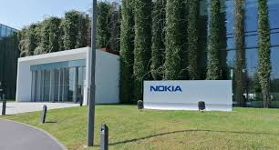
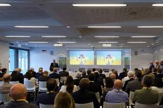

L'Azienda Nokia
| Durante quest’anno scolastico abbiamo avuto l’opportunità di visitare un’importante azienda del settore tecnologico: Nokia, leader globale nelle telecomunicazioni. Questa esperienza ci ha permesso di entrare in contatto con il mondo dell’innovazione, della ricerca scientifica e dello sviluppo tecnologico. |  |
Visione per il Futuro
- Espansione del 5G e sviluppo del 6G
- Soluzioni sostenibili per l’ambiente
- Intelligenza artificiale per reti intelligenti
- Collaborazione con università e centri di ricerca
Nokia Bell Labs
|
Abbiamo visitato laboratori dove vengono testati i dispositivi:
|
Conclusioni
Abbiamo testato i visori VR utilizzati da Nokia per la formazione, la progettazione e applicazioni industriali.
Un'esperienza formativa che ci ha mostrato il valore della ricerca, dell'innovazione e della preparazione per i lavori del futuro.